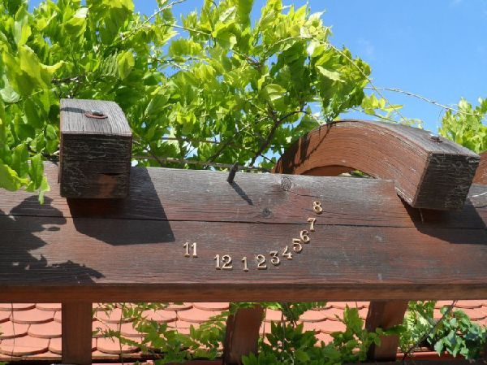
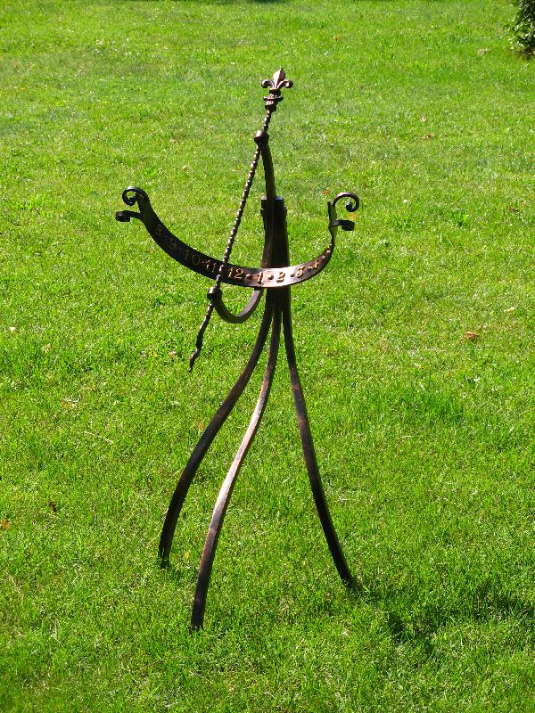
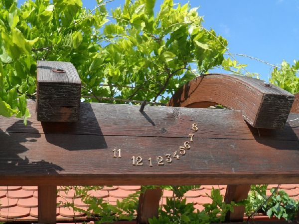
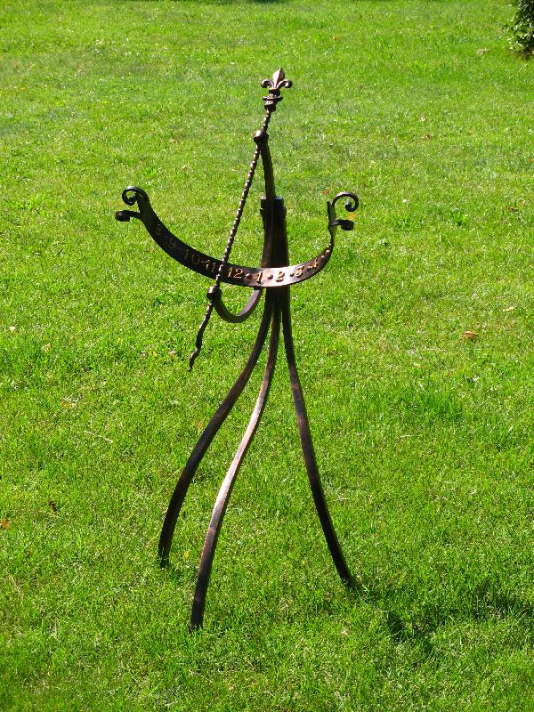
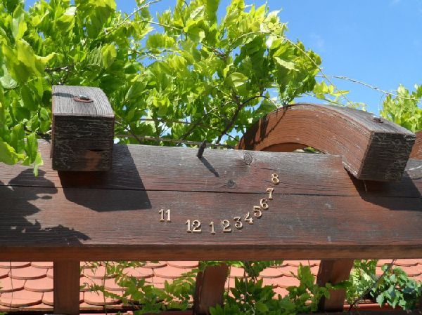
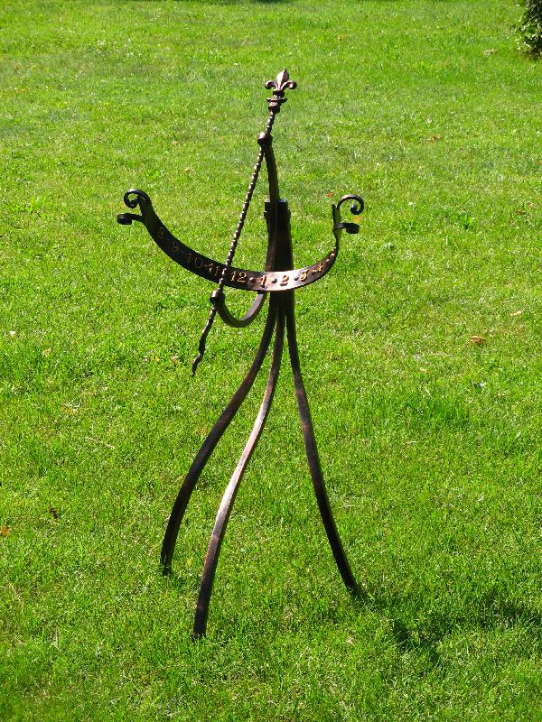
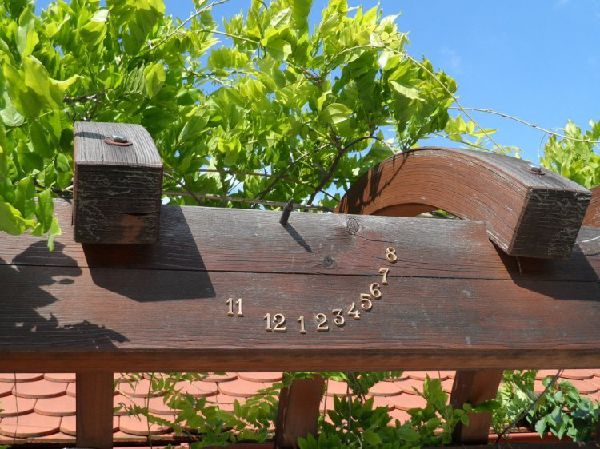
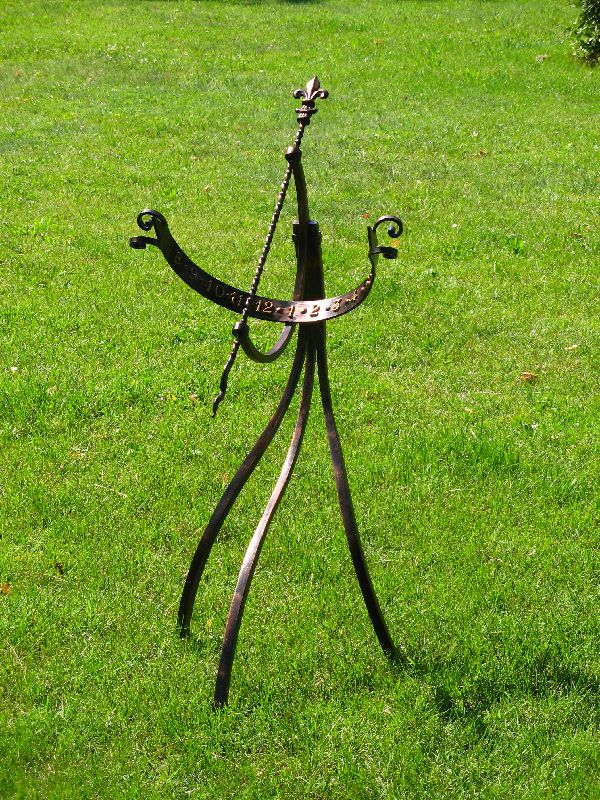

Napóra ajánlatok Milyen fajta házban lakik? Kertes Társas Hova szeretné a napórát? Fal Talaj Milyen anyagból szeretné napóráját? Mekkora legyen a napóra? Kicsi Közepes Nagy Mennyi pénzt szánna a napórára? 100.000 Ft alatt 100.000 Ft - 200.000 Ft 200.000 Ft felett Egyedi árazás Gesztenye Méret: 30 cm x 30 cm Anyag: festett fa Ára: 39.900 Ft Gesztenye Méret: 50 cm átmérő Anyag: fa, bronz számokkal Csak számok és a mutató Ára: 25.900 Ft Szél Méret: 40 cm x 40 cm x 80 cm Anyag: Hajlított acél, bronz számokkal Szín: Fekete vagy bronz Talapzat: Terméskő Ára: 99.900 Ft Földgömb Méret: 40 cm x 40 cm x 80 cm Anyag: Hajlított acél, bronz számokkal Szín: Fekete vagy bronz Talapzat: Terméskő Ára: 119.900 Ft Napocska Méret: 80 cm x 80 cm Szinterezve Szín: Fekete vagy bronz Rögzítés: Maximum 4m magasságig Anyag: Hajlított acél Ára: 129.900 Ft Napsugár Méret: 80 cm x 80 cm Szinterezve Szín: Fekete vagy bronz Rögzítés: Maximum 4m magasságig Anyag: Hajlított acél Ára: 129.900 Ft Háromszék Méret: 50 cm x 50 cm x 120 cm Bronz számokkal Szín: Fekete vagy bronz Anyag: Hajlított acél Felületkezelés: Igen Ára: 149.900 Ft Harmónia Méret: 60 cm x 100 cm Szín: Fekete vagy bronz Felszerelés: Maximum 4 m magasságig Anyag: Hajlított acél Felületkezelés: Igen Ára: 149.900 Ft Dallam Méret: 50 cm x 60 cm x 75 cm Bronz számokkal Szín: Fekete vagy bronz Anyag: Hajlított acél Felületkezelés: Igen Ára: 155.900 Ft Káloz Méret: 50 cm x 50 cm x 150 cm Szín: Fekete vagy bronz Rögzítés: Betontalapzatra Anyag: Hajlított acél (talapzat szükséges) Ára: Egyedi árazás (hívjon!) Meteor Méret: 150 cm x 150 cm Szín: Fekete vagy bronz Felszerelés: Maximum 4 m magasságig Anyag: Hajlított acél Felületkezelés: Igen Ára: 185.900 Ft Spirál Méret: 200 cm x 150 cm Szín: Fekete vagy bronz Felszerelés: Maximum 4 m magasságig Anyag: Hajlított acél Felületkezelés: Igen Ára: 249.900 Ft Hattyú Méret: 30 cm átmérő, 80 cm magas Anyag: Polírozott réz, gravírozva Stílus: Horizontális napóra hattyú motívummal Oszlop anyaga: Fényesre csiszolt fagyálló mészkő Terv: Trieb Zsuzsa, Mihály Jolán, Tulok László Ára: Egyedi árazás (hívjon!) Kőgömb Méret: 200 cm átmérő Anyag: homokfújt mészkő (talapzat szökséges) Terv: Mihály Jolán, Tulok László Ára: Egyedi árazás (hívjon!) Virágóra Méret: 400 cm Anyag: faragott mészkő és kovácsoltvas Terv: Mihály Jolán, Tulok László Ára: Egyedi árazás (hívjon!) Csodaszarvas Méret: 90 cm átmérőjű Szín: Barna és bézs Stílus: Sámándob alakú napóra Anyag: Kovácsoltvas és faragott mészkő Felszerelés: Maximum 4m magasságig Terv: Mihály Jolán, Tulok László Ára: Egyedi árazás (hívjon!) Létra Méret: 150 cm x 45 cm Szín: Vaj és bézs Stílus: Analemmatikus napóra Anyag: Faragott mészkő Terv: Mihály Jolán, Tulok László Ára: Egyedi árazás (Hívjon!) Gémeskút Méret: 400 cm Anyag: faragott mészkő és fa Terv: Mihály Jolán, Tulok László Ára: Egyedi árazás (hívjon!) Zodiákus Méret: 200 cm x 100 cm Szín: Festett Stílus: Zodiákus napóra Anyag: Alumínium lemez (1.2 mm) Felszerelés: Maximum 4 m magasságig Terv: Trieb Zsuzsa, Tulok László Ára: Egyedi árazás (hívjon!) Márvány Méret: 75 cm x 75 cm Anyag: Faragott, csiszolt mészkő Szín: Halvány vaj, szürke, bézs Stílus: Kézi faragás, aranyozás arany füsttel Felszerelés: Maximum 4 m magasságig Terv: Mihály Jolán, Tulok László Ára: Egyedi árazás (hívjon!) Patikus Méret: 40 cm x 40 cm Anyag: Gipsz Szín: Halvány vaj, szürke, bézs Rögzítés: Maximum 4 m magasságig Terv: Mihály Jolán, Tulok László Ára: Egyedi árazás (hívjon!) Nap-Hold Méret: 100 cm x 200 cm Szín: Festett Stílus: Domborított napóra Anyag: Alumínium lemez (1.2 mm) Felszerelés: Maximum 4 m magasságig Terv: Bogdán Zoltán, Tulok László Ára: Egyedi árazás (hívjon!) Sárkány Méret: 100 cm x 200 cm Szín: Festett Anyag: Alumínium lemez (1.2 mm) Felszerelés: Maximum 4 m magasságig Terv: Bogdán Zoltán, Tulok László Ára: Egyedi árazás (hívjon!) Sárkány Méret: 80 cm x 80 cm Anyag: Festett gipsz, fém mutató Rögzítés: Maximum 4 m magasságig Terv: Varga Anikó, Tulok László Ára: Egyedi árazás (hívjon!) Nincs ilyen termék!
 






